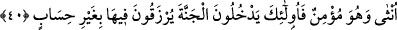

yola erişemezsiniz.” “Ama âhiret, gerçekten” ebediyyetinden ve orada yaşanacakların
sürekliliğinden dolayı “kalınacak yurttur.” Çünkü dâimî olan gelip geçici olandan
hayırlıdır. Âriflerden biri diyor ki: Şayet dünya gelip geçici bir altın; âhiret ise
sürekliliği bulunan bir çömlek olsaydı, yine âhiret daha hayırlı olurdu. Halbuki dünya
geçici bir çömlek, âhiret ise ebedî altındır.
İbn Mes’ûd (r.a.)’den rivâyet edildiğine göre Hz. Peygamber (s.a.), bir hasır üzerinde
uyurken bedeninde hasırın izleri belirmiş bir vaziyette kalkmıştı. Bunu gören İbn
Mes’ûd: “Ya Rasûlallah! Bize emretsen de sana bir döşek yapsak” dedi. Hz. Peygamber
(s.a.) bu teklife şu cevabı verdi: “Dünya kim ona itibar eden kim? Benimle dünyanın
durumu ancak bir ağaç dibinde gölgelenip istirahat eden sonra da oradan ayrılıp
giden bir atlıya benzer.”[185]
Enes b. Malik’ten de Hz. Peygamber (s.a.)’in şöyle buyurduğu rivâyet edilir:
“Yavrum! Ölümü çokça hatırla, çünkü ölümü sık sık hatırladığında dünyaya olan
rağbetin azalır, âhirete daha çok imrenirsin. Esas kalınacak yurt âhirettir. Dünya ise
bir aldanıştır. Gerçek bir aldanmış arıyorsan, dünyaya takılıp ona aldanan
kimselerdir.”[186]
[Sa’dî, Bustan’da şöyle der:]
Sen kâr ve mal endişesiyle gafilken,
Ömür sermayesi ayaklar altında kaldı
Öğrencisine ne de güzel demiş öğretmen:
Bir iş yapmadık, vakit de geçti.
40. Kim bir kötülük işlerse, onun kadar ceza görür. Kim de kadın veya erkek,
mü’min olarak faydalı bir iş yaparsa işte onlar, cennete girecekler, orada onlara
hesapsız rızık verilecektir.
“Kim” dünyada “bir kötülük işlerse” âhirette Yüce Allah’tan bir adalet olmak üzere
ancak “onun kadar cezâ görür.” Meselâ kâfirin ateşte ebediyen kalması, dünyadaki bir
saatlik küfrüne bile denktir. Çünkü ebediyen öyle inanacaktı. Günahkâr mü’mine
gelince, bunun azâbı bir zaman gelip bitecektir. Çünkü o, sürekli isyân eyleminde
bulunmak kararlığında değildir. Âyet-i kerîmede gerek canla gerek malla gerekse
organlarla ilgili tüm suçlara ancak kendi misilleriyle karşılık verilmesi gerektiğine ve
mislin aşılmasının gayr-i meşrû olduğuna delil bulunmaktadır.
“Kim de kadın veya erkek,” herkesi sâlih amellere teşvik için her iki cinsi de